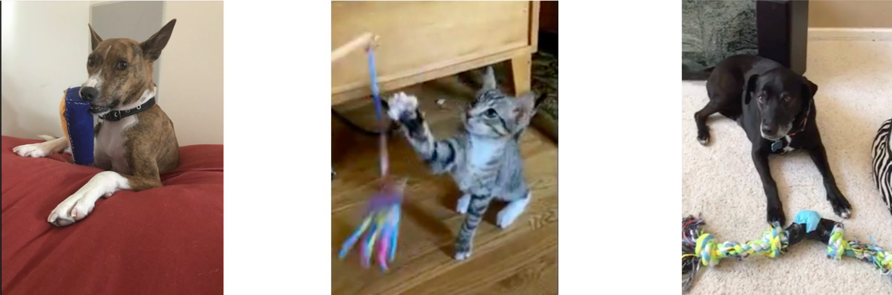

April 2020: Received Honorable Mention for NSF GRFP
April 2020: Presented Game Changer at W4A virtually
January 2020: Got first paper accepted to W4A '20!
August 2109: Named a GEM Associate Fellow
Welcome! My name is Gabriella Johnson and I am a PhD student at the University of Colorado Boulder in the Superhuman
Computing Lab under the advisement of Shaun Kane.
Presenting a poster at the CRA URMD Grad Cohort in Waikoloa Village, Hawaii!
Gabriella Johnson | Computer Science, HCI | University of Colorado Boulder
I was born and raised in San Antonio, Texas (proud Texan!). Now living in the beautiful Boulder, Colorado!
I graduated from the University of Texas at San Antonio with my Bachelor of Science in Computer Science and a minor in Mathematics.
Currently, I am a Ph.D. student in the Superhuman Computing Lab at the University
of Colorado Boulder, under the advisment of Shaun Kane, focusing on research in Human Computer Interaction with a specialization in accessibility and assistive technologies.
The majority of my research focuses on fairness, equality, and independence in the area of accessibility.
Specficially, I want to dive into how we can empower children to be indepedent and provide them with tools to be successful academically, focusing on literacy skills.
A player uses Game Changer’s audio guidance and tactile landmarks to explore the board game SORRY!
Many board games present their information visually, such as text on the cards and the location of the game pieces.
This causes accessibility challeneges for people with visual impairments.
Game Changer is a tool to be utilized by people with visual impairments to receive information about the state of a board game.
Players are able to get the information on cards read and the location of their game pieces as well as their opponent's.
An example of BoardBooster's workflow for a Dominion card
People with visual impairments have to label board games with Braille to make them accessible. However, this process can be ardous.
BoardBooster provides a quicker and more affordable option to do-it-yourself accessibility methods
or purchasing accessibility kits from sites like 64oz Games and MaxiAids.
BoardBooster is a web application that creates accessibility kits for board games.
It creates a tactile overlay for the board and Braille labels for the board, cards, and game pieces.
Users will have the option to annotate the board and create Braille labels for any important text, labels for the game pieces are generated after answering
questions about the game, and users create templates of the cards then scan the cards to create Braille labels.
Once the accessibility kit is generated for a game, it will be available on this public repository.
Young child using Rainie (pointing to an unknown word) to help read a book
Half of children from low income communities start first grade up to two years behind their peers [1]. 1 in 4 children in America
grow up without learning how to read [2]. These statistics motivate this project, Rainie the Reading Robot. Rainie is a aid for children
during storytime, where the teddy bear robot will read aloud any words that the child is unfamiliar with. Over time, we hope that this
relationship will result in an improvement in the child's reading level. Rainie is a stand-in for parents who do not have the time
or grasp of the langauge to have a storytime with their children. This teddy bear project will empower children to take control of their
reading development and provide them with the tool to do so.
References
Brizius, J. A., & Foster S. A. (1993). Generation to Generation: Realizing the Promise of Family Literacy. High/Scope Press.
WriteExpress Corporation. "Literacy Statistics." Begin to Read. Accessed April 16, 2014.

Examples of some of the projects participants created for their pets
We ran a two week virtual summer camp where we conducted activities with participants that allow them to explore their pet senses.
Participants were able to use augmented reality tool to experience the world through the eyes of their pets and
build paper ears to understand how their pets hear. For the second week, participants build something that could improve an aspect of their
pet's lives, most participants chose to augment current toys or build new ones (image above), while others chose to build new environments.